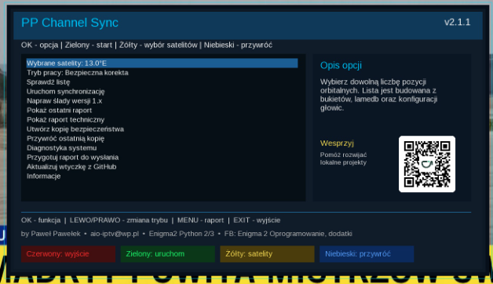

Witam na mojej stronie Paweł Pawełek
Aktualizacja na podstawie raportów użytkowników • Egami i OpenATV
PP Channel Sync 2.1.1
Wersja 2.1.1 poprawia zgodność z listami zawierającymi niestandardowe wpisy techniczne #SERVICE. Zastane wpisy nie blokują już całej synchronizacji, a ochrona nadal zatrzymuje zapis rzeczywiście uszkodzonego odwołania utworzonego lub zmienionego przez wtyczkę.

🚀 Co poprawiono w wersji 2.1.1?
- poprawiono obsługę niestandardowych wpisów
#SERVICE - zastane wpisy techniczne nie blokują już całej synchronizacji
- walidowane są przede wszystkim wpisy utworzone lub zmienione przez PP Channel Sync
- zachowano blokadę przed zapisaniem rzeczywiście uszkodzonego service reference
- poprawiono działanie na systemach Egami oraz najnowszych wersjach OpenATV
- instalator usuwa stare pliki
pyc,pyoi katalogi__pycache__ - tuner nie powinien już uruchamiać wcześniejszej wersji kodu z pamięci podręcznej
- poprawiono aktualizację między starszymi wersjami 1.x i gałęzią 2.x
Wszystkie wcześniejsze poprawki pozostają aktywne
Bazy, źródła i satelity
- pełna obsługa baz lamedb oraz lamedb5
- pobieranie list kontrolnych zamiast błędnych paczek z piconami
- obsługa dodatkowych i zagnieżdżonych archiwów
- synchronizacja kilku satelitów podczas jednej operacji
- osobna analiza każdej zaznaczonej pozycji orbitalnej
- wykrywanie satelitów z list, bazy Enigma2 i konfiguracji głowic
Bukiety i nowe kanały
- nowe kanały są dopisywane na dole właściwych bukietów
- separator i oznaczenie nowych kanałów przez PP Channel Sync
- data synchronizacji oraz podpis @ PP Channel Sync
- brak dublowania kanałów, separatorów i wpisów informacyjnych
- zachowanie dotychczasowej kolejności kanałów i układu bukietów
- brak ingerencji w DVB-T, DVB-C oraz IPTV
Bezpieczeństwo listy
PP Channel Sync nie zastępuje całej listy użytkownika. Analizuje konfigurację znajdującą się na tunerze, poprawia zmienione parametry kanałów satelitarnych i dopisuje wykryte nowości do odpowiednich bukietów.
- przed zmianami wykonywana jest kopia bezpieczeństwa
- sprawdzana jest poprawność danych przed zapisem
- rzeczywiście uszkodzone wpisy nadal są blokowane
- w przypadku błędu operacja jest cofana
- lista jest automatycznie przywracana z kopii
- rozszerzone raporty pomagają ustalić źródło problemu
Obsługa wtyczki
- Naciśnij żółty przycisk, aby wybrać jedną lub kilka pozycji orbitalnych.
- Sprawdź tryb pracy oraz pozostałe opcje korekty.
- Naciśnij zielony przycisk, aby uruchomić analizę i synchronizację.
- Po zakończeniu otwórz raport i sprawdź podsumowanie zmian.
Zdjęcie wtyczki
Instalacja lub aktualizacja
Instalację można wykonać z poziomu AIO Panel, z pozycji samej wtyczki PP Channel Sync albo przez terminal. Po instalacji wykonaj restart interfejsu Enigma2.
wget -q -O - "https://raw.githubusercontent.com/OliOli2013/PPChannelSync-Plugin/main/installer.sh?$(date +%s)" | /bin/shParametr z bieżącym czasem ogranicza ryzyko pobrania starej wersji instalatora z pamięci podręcznej.
opkg install --force-reinstall /tmp/enigma2-plugin-extensions-ppchannelsync_2.1.1_all.ipkRaport błędów
W przypadku dalszego problemu podaj model tunera, nazwę i wersję systemu, wersję Pythona oraz zawartość pliku:
/tmp/ppchannelsync_error.txtInformacje
Wersja: 2.1.1
System: Enigma2 Python 2/3
Autor: by Paweł Pawełek
Kontakt: aio-iptv@wp.pl